MSECM 독서 프로덕트

선생님이 만든
어린이 명작 도서관
1~6학년 고전 300권을 학년 눈높이로 읽고, 모르는 낱말은 누르면 그 자리에서 뜻을 봅니다.
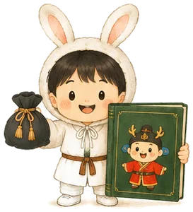
- 0권
- 학년별로 다시 쓴 고전
- 1~6학년
- 그림책부터 장편까지
- 0학급
- 선도교사단 운영
- 0권
- 선도교사단 한 달 완독
아이가 책을 덮는 순간은 정해져 있습니다.
모르는 낱말 하나, 너무 긴 첫 장, 다 읽고 나서 할 말이 없을 때.
한 권을 끝까지 읽게 만드는 네 가지
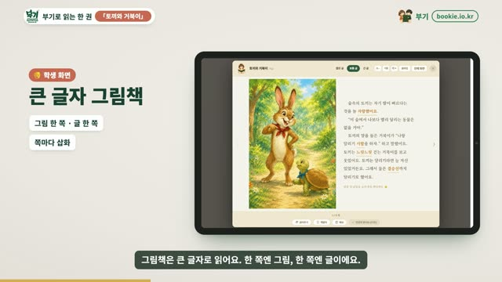
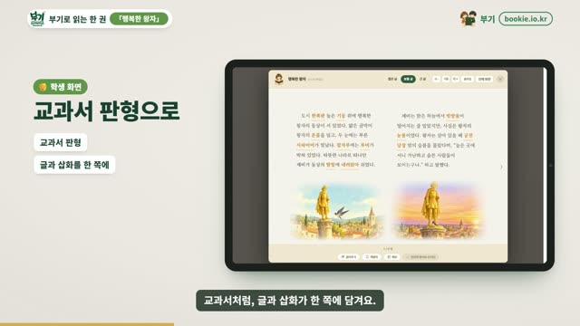
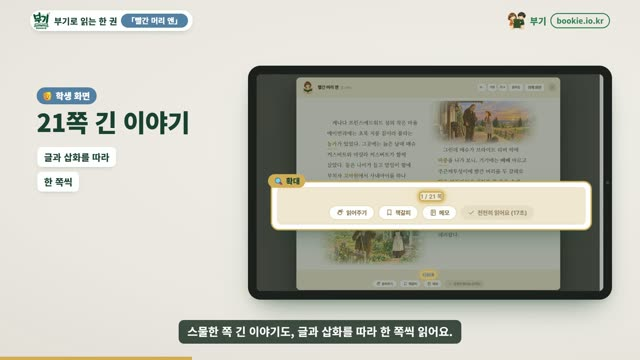
01 학년 눈높이 고전
「토끼와 거북이」부터 「빨간 머리 앤」까지 300권
1~6학년 분량에 맞게 고전을 다시 썼습니다. 저학년은 그림책 길이로, 고학년은 장편을 이야기별로 나눠 읽습니다. 작가진이 지금 아이들에게 맞지 않는 표현을 점검하고, 장면마다 삽화를 붙였습니다.
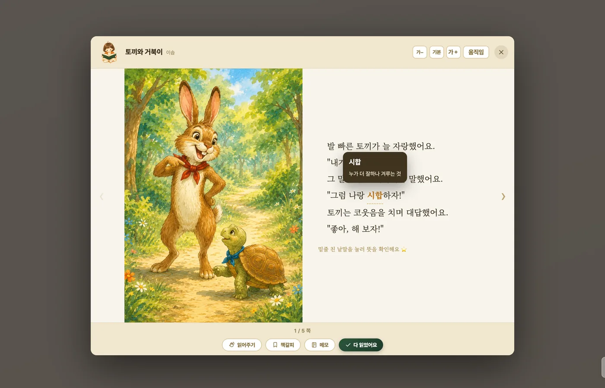
02 낱말 도움
모르는 낱말은 툭, 뜻은 그 자리에서
읽다가 막히는 낱말을 누르면 뜻과 쉬운 말이 바로 뜹니다. 사전을 찾으러 책을 떠나지 않으니 읽던 흐름이 끊기지 않습니다. 어휘력 진단 결과에 맞춰 아이에게 알맞은 책도 골라 줍니다.
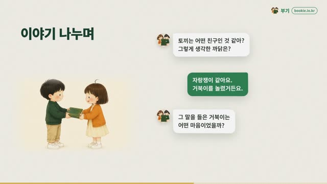
03 인물과 이야기 나누기
정답 대신, 질문을 건네는 책 속 인물
책을 다 읽으면 토끼, 거북이 같은 책 속 인물과 이야기를 나눕니다. 인물은 답을 알려 주지 않고 "너라면 어떻게 했을 것 같아?"라고 되물어, 아이가 다시 본문을 펼치고 스스로 생각하게 합니다.
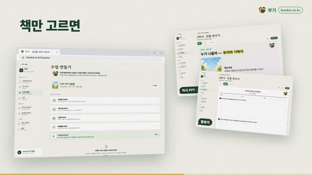
04 독후활동과 기록장
읽은 뒤의 생각이 기록으로 남습니다
책마다 마음에 남은 장면 고르기, 인물에게 편지 쓰기 같은 독후활동이 붙어 있습니다. 아이가 남긴 생각은 기록장에 모이고, 선생님은 그 자리에서 한마디를 건넵니다.
교실과 집을 함께 잇습니다
활동지를 따로 만들지 않아도, 책 예산이 없어도.
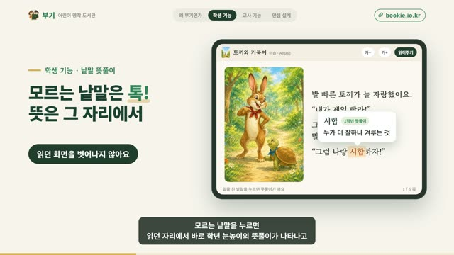
선생님은 책만 고르세요
온책읽기 책을 고르면 반 전체가 같은 책을 함께 엽니다. 독후활동과 확인 퀴즈가 책마다 준비되어 있습니다.
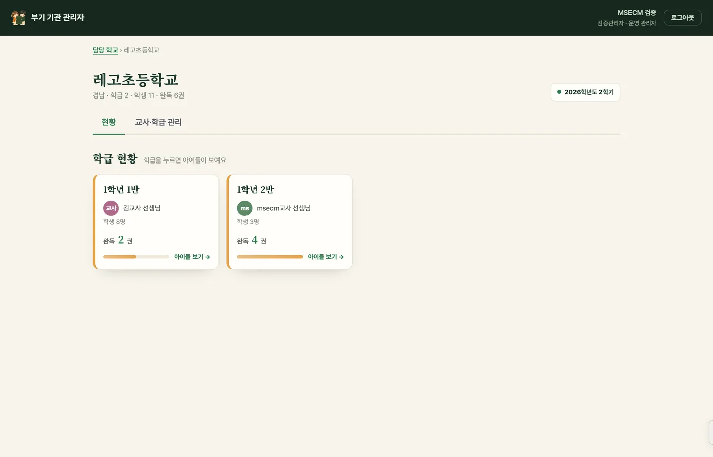
학교 단위로 관리
기관 관리자 화면에서 학급과 선생님 계정을 한곳에서 관리합니다. 학교 단위 도입과 연수도 함께 안내합니다.

집에서도 함께 읽기
저녁에 아이와 같은 책을 열어 보세요. "토끼는 왜 낮잠을 잤을까?" 한마디가 아이의 생각을 넓힙니다.
우리 반 고민에서 시작하는 독서
고민 한 줄이 질문이 되고, 책 한 권과 독후활동을 거쳐 독서 포트폴리오 한 장이 됩니다.
- 고민 적기마음 카드를 고르거나 한 줄로 적어요
- 부기와 이야기고민을 함께 생각할 질문으로 바꿔요
- 세 갈래 책비춰 보는 책, 닮은 인물, 더 넓게 보는 책
- 한 권 읽기질문을 품고 낱말 뜻을 보며 끝까지
- 인물과 이야기책 속 인물에게 묻고, 받아들일지 스스로 정해요
- 독서 포트폴리오처음 생각과 지금 생각이 한 장에 남아요
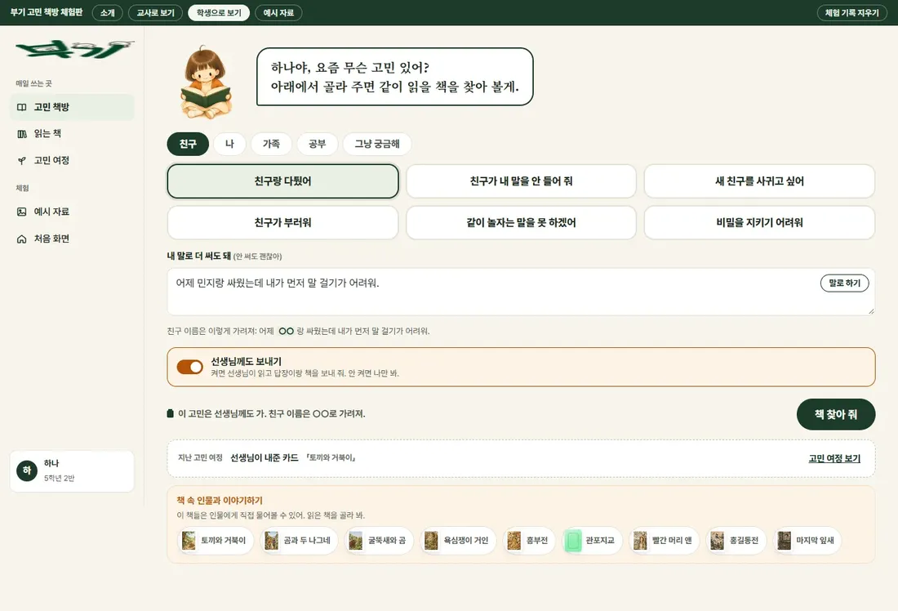
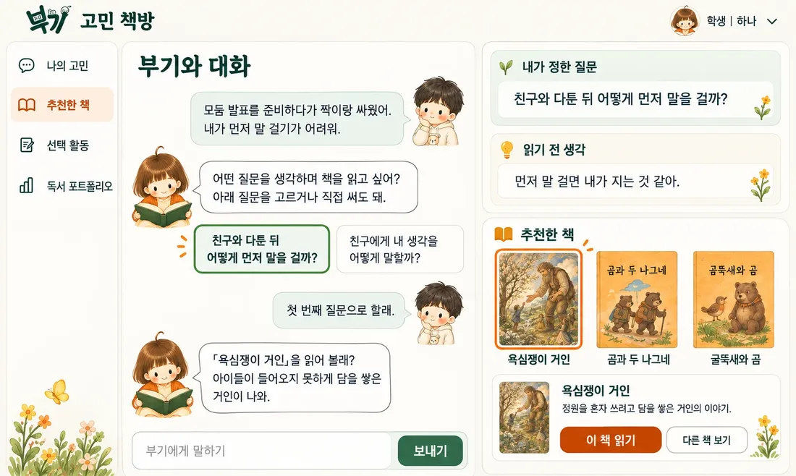
학년이 올라갈수록 학생이 묻습니다
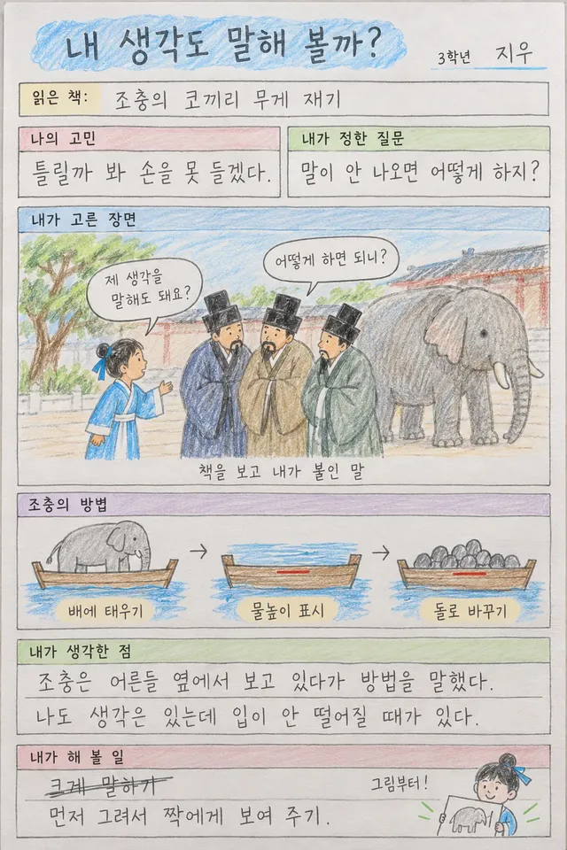
3학년 | 1단계 인물이 먼저 묻기
「조충의 코끼리 무게 재기」
생각은 있는데 손을 못 드는 반. 장면을 읽고 나면 조충이 먼저 묻고, 학생은 책에서 찾은 문장으로 답합니다.
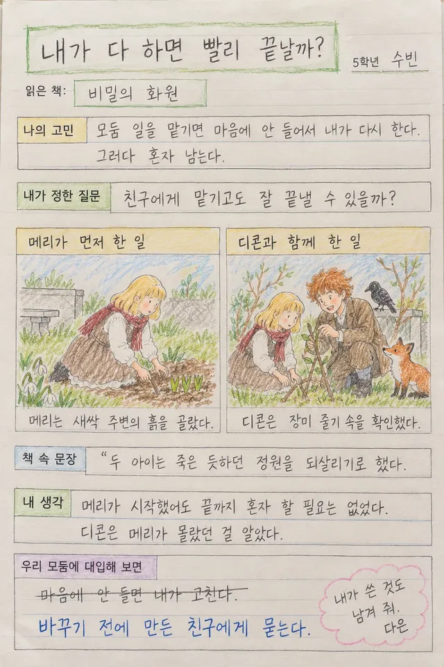
5학년 | 2단계 주고받기
「비밀의 화원」
모둠 일을 혼자 다시 하는 반. 디콘이 하나를 묻고, 학생도 인물에게 물을 질문을 하나 만듭니다.
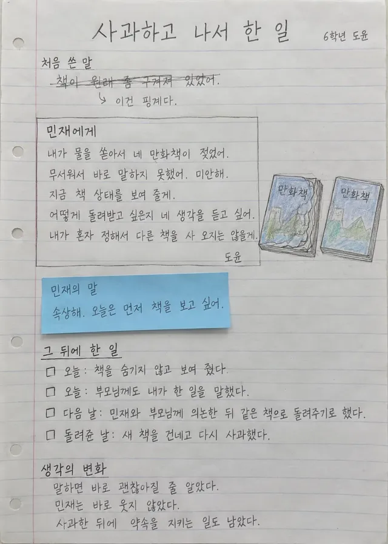
6학년 | 3단계 학생이 묻기
「목걸이」
실수를 알리고 나서 무엇을 할지 모르는 반. 학생이 마틸드와 남편에게 같은 질문을 던져 답을 견줍니다.
교실에서 먼저 써 본 선생님들
선도교사단 선생님들이 남긴 사용 후기 가운데.
아이들이 항상 읽을 책이 없고 두꺼운 책에 부담을 느꼈는데, 부기를 활용하니 책을 더 많이 읽게 된 것 같아요.
학생들이 매우 흥미로워했어요. 고학년은 저학년 책부터 찾아 읽으며 호기심을 보였습니다.
온책읽기 예산도 따로 없었는데, 이제 부기로 편하게 할 수 있을 것 같아 정말 다행이고 기쁩니다.